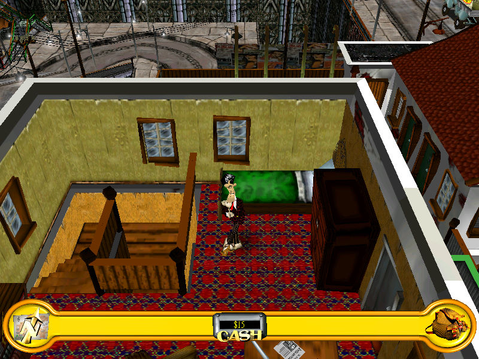

名稱：鬼計神偷 (The Sting!，中文版)
簡介：neo 2001年出品的動作冒險解謎遊戲，由JoWooD代理發行，台灣則由英特衛中文化並
代理發行 [待補]。

保護：繁中版為光碟SecuROM 4.68（英文免光碟檔無效）
備註：非安裝移機者，需設定下列Registry（假設光碟在D）：
[HKEY_LOCAL_MACHINE\SOFTWARE\neoSoftware\TheSting!]
[HKEY_LOCAL_MACHINE\SOFTWARE\WOW6432Node\neoSoftware\TheSting!]
"CdPath"="D:\\Game"
備註：VirtualBox無法正常執行，虛擬機請使用VMware。
備註：繁中版為2.01版